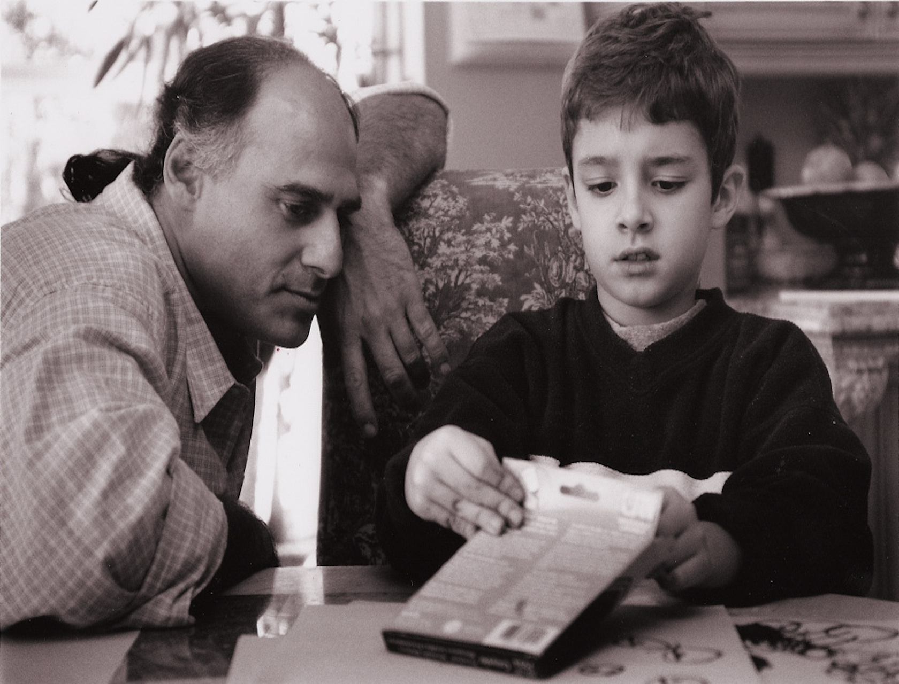

Applied Developmental Analysis (ADA)
ADA is a new way of thinking about unique personal growth. It is a synthesis of:
- Developmental Psychology
- “Positive Psychology”
- Cognitive Behavioral Therapy (CBT)
- Applied Behavior Analysis (ABA) and other learning theories (e.g., classical conditioning)
- Building in intrinsically enjoyable curricula such as the use of technology (i.e., Computers, iPads, video, etc.), literature, music, movement, graphic arts or other activities specifically interesting to your child
- Interdisciplinary therapeutic approaches
- Evidence-based methodologies

ADA combines Developmental Psychology – which recognizes that people change across a lifetime of experience in unique ways – with a range of different therapeutic disciplines and approaches aimed to maximize growth. ADA includes data-driven interdisciplinary methods woven together in a therapeutic mosaic that fits each person individually in every phase of their life.
Developmental Psychology
The overlay of Developmental Psychology involves recognizing how people change from one life-phase to the next; infants are different form toddlers; preschoolers age into children and again change to pre-teens; teenagers are not yet adults; and adulthood has many phases to becoming a senior. How a particular therapy or approach may influence development in one phase of life may be very different from another. How synergies of different therapies come together for a 2 year old are very different for a child at 4- or 8- or 18 years of age.
How change and grow occurs is truly a unique process for each one of us. As far as therapies for children struggling with a disability — what “works” for one person may be quite different for another. What works on one day may differ from what works another day.
On top of that, children of all ages (and adults) express themselves very differently as a function of “context.” A person’s abilities are influenced by who they are with, where they are, how much they want to be doing what they are doing, how calm or overwhelmed they are feeling, the general health of their minds and bodies, and much, much more. People are not robots and they are responsive to the circumstances and people that surround them. As a group of “developmentalists” we are highly attuned to the unique factors that surround and influence each person and the individual qualities that each of us possess.
Developmental Psychologists have also been carefully studying many aspects of how children and adults develop — offering crucially important data and perspective on the nature of change across our lives. Specific “domains” of study across development that WE ALL NEED TO KNOW ABOUT, includes:
- The biological influences on our behavior and how the biology can change with our experiences
- Perceptual systems and how our senses function and inform us about the world
- Movement and the control of our actions
- Language and the unfolding of our communication with others
- Cognitive processes like how we pay attention, think and learn
- “Theory of Mind” — which is a set of cognitive processes in which we depart from egocentric views of the world — recognizing and understanding the motives, intentions, thoughts and actions of the “self” as distinct from “others” — the ability to move from ones’ own perspective to the perspective(s) of others
- “Executive Function” — how we develop the cognitive abilities to organize, plan, anticipate, manage time, make decisions and strategize our thoughts and day-to-day actions
- “Attachment” to loved ones and how we form our closest relationships to family and loved ones
- Emotional regulation and how we become self-aware — and aware of others — in our actions and emotions and being able to regulate these emotions in productive relationships with others
- Social relatedness to friends or just people that we are meeting for the first time
- Moral development and how we acquire our societal senses of right and wrong
- Parenting and the process of conveying life’s lessons to our children regardless of what the circumstances are in their development
- Adult-life and aging in which we understand how we are developing and changing for our entire life
Each of these areas of study can inform us about ourselves and about our children. Each topic is the tip of an iceberg with large databases underneath with which we can better understand the nature of human growth. It’s in knowing how “typical” development is described that we come to understand how “atypical” we all are.
“Positive Psychology”
Professors Martin Seligman, Ph.D., Mihaly (Mike) Csikszentmihalyi, Ph.D., Christopher Peterson, Ph.D. and others have championed a new area of study called “Positive Psychology.” The aim of this discipline is to understand how to promote happiness, a sense of well-being and meaningfulness in one’s life. Much of psychology is focused on models of pathology – what is wrong or disabled – for people in general, and individuals who are different from the norm specifically. Positive Psychology is a set of theories, research findings, practices and life-styles that go beyond “what’s wrong” with us to ascend to what is “right” about each of us in unique ways and how to further a sense of “wellness” in our lives.
Dr. Seligman and other researchers have proposed theoretical frameworks for typically developing individuals that have great utility in promoting well-being among all individuals, including those with developmental differences and disabilities. For example, Dr. Seligman talks about the importance of five factors that influence our sense of well-being – PERMA:
- Positive Emotions – expressing and exchanging happiness and joy;
- Engagement – flow into activities in which you lose a sense of time and space because the activity is so all consuming and meaningful to engage in that you get lost in concentration on those activities;
- Relationships – joining and maintaining important relationships with others;
- Meaning – immersing oneself in activities and endeavors that are for a greater good beyond yourself;
- Accomplishments – achievement in activities that matter to you.
Part of the goals in our therapeutic activities with our clients is to promote these elements of a Positive Psychology. Though this may sound trite to some, why shouldn’t we be in pursuit of well-being regardless of one’s developmental differences or disabilities? Our supposition is that a person’s growth is best promoted from a place of happiness from engaging in relationships and activities that are meaningful to each person in which they can achieve a sense of accomplishment in what they do. The therapeutic goal is to consider each person’s unique interests and perspectives to aide them in finding their way into PERMA.
Cognitive Behavioral Therapy (CBT)
Generally, CBT is aimed at helping individuals develop more positive and productive behavior and thought patterns, processes and views of themselves and others. These techniques are often used with individuals who struggle with anxiety or depression and can be quite helpful for individuals in need of bolstering their self-esteem. These techniques are very goal oriented with explicit planning, therapy and instruction in how to follow through in overtly changing one’s actions and thoughts that historically drag a person down into their struggles.
For many of the children that we work with, CBT includes the use of curricula and methods that can assist in the changing of these processes. For example, we utilize the Social Thinking curricula and Superflex programs (authored by Michelle Garcia-Winner and her colleagues) that have become commonly used in many school boards and clinics across the country. We also utilize a great deal of Social Stories (popularized by Carol Gray and colleagues), as well as the innovative uses of videotapes and conventional television shows developed by Dr. Michael Weiss and his writing partner Dr. Sheldon Wagner, as important medium in which to understand self and other awareness and social interactions.
Among the many activities that we engage in to promote our clients’ understanding of relationships with others, we orchestrate “friendship networks.” This involves recruiting other children, teens or adults that would also benefit from developing and extending their friendships and adding in the structure of how these individuals spend time together. All of this is done in a context of promoting an understanding — including changes in behavior and thought processes — of relating to others in enduring and meaningful ways.
Applied Behavior Analysis (ABA) and the use of other “learning theories”
Applied Behavior Analysis (ABA) is a form of “learning theory” in which behavior — such as how a person acts toward others, how they learn or communicate, how they develop personal awareness and care for themselves and others and more — is influenced by the surrounding events that leads up to behavior or what serves as consequences in the wake of behavior. ABA is largely based on “Operant Conditioning” popularized by B.F. Skinner’s research mostly reported from the 1930’s to 1960’s. By “functionally” assessing the relations between how we act and the situations surrounding us, an ABA system can help in both understanding how a person is acting and assist in how we teach.
“Applied Developmental Analysis” goes beyond conventional ABA in that we are interested in all forms of learning theory, which also includes forms of:
- “Classical conditioning,” which is how we learn through pairing together a stimulus (seeing the bathroom and having the ‘urge to go’) and a response (pooping!)
- The study of what is called “non-associative learning,” which is the study of boredom (how many people get tired of doing the same thing over and over again) and arousal (how we learn to get interested in new things) related to how we pay attention and learn about our environment through variations in our encounters with our surroundings
- Social Learning Theory and “modeling” of others’ behavior such as acting the ways those around us are acting
All of these methods — along with ABA — are taught together in any college course on “learning theory.” However, unfortunately most ABA practitioners focus only on learning through consequences (“Operant Conditioning”) and leave out these other important modes of learning. We rely on ABA methods as well as strategies drawn from the other forms of learning. We also know that sometimes none of these methods fit how or what we are trying to teach to a child, favoring methods from other disciplines and technologies.
Building in intrinsically enjoyable activities as “curricula” in your child’s life
Have you ever thought to yourself, “I wish my child was as interested in their school work as they are in playing a video game?” Well… we have the “technology” to do that… and we need to do that for many students to prosper.
We now live in the “iPad generation,” which means many people who in the past would have had no interest in school work or their own therapy can now be reached with built-in excitement — or “intrinsic interest.” Kids in classrooms that use Smartboards are able to pay attention to lessons that in the past would have been simply ignored as they daydream the day away. Individuals diagnosed with Autism are able to access and interact with lessons precisely because they can interact and control a device that makes sense to them. The iPad Generation enters their education with options never before seen.
One of the inherent flaws in how many practitioners utilize Positive Reinforcement in the lives of children that they work with is that they set up a “work first, then play” dynamic. What I mean by that, is that children get the message that they have to do the dreary hard work first and only then, after they have earned it, can they have fun with favorite activities (i.e., rewards).
But ask yourself the question…
“… how would my child do if the ‘work’ wasn’t dreary, and it involved his or her most fun activities?”
People who truly excel at what they do create educational opportunities, careers and lives based on what they love to do. Why shouldn’t our children’s educations also be based on what they love to do?
Children can prosper if those of us in the roles of teachers, parents or therapists can think of educational activities that include fun things to do! If this sounds unrealistic, consider how much better many children will respond to educational or therapeutic activities that include the use of technology (i.e., Computers, iPads, video, Smartboards, etc.), music, movement or other activities specifically interesting to your child.
This doesn’t mean that children would be exempt from learning things that they find uninteresting or tough… not all education will be fun. But the question is, how do you link the tough activities to things that a child finds “inherently interesting?” We can be much better at doing this.
Part of an ADA approach to working with children is developing an “interest inventory” and building curricula around those interests — this is what creates “intrinsic reward” in participating in ones own education and therapy.
Interdisciplinary Therapeutic Approaches
In addition to using a variety of learning theories, we rely heavily on strategies that are drawn from an array of disciplines, methodologies and philosophies to fit a person’s unique way of being. That’s why we emphasize an analysis of many factors that surround a person’s behavior or way of being in the world. Yes, it is important to know the immediate conditions surrounding how a person is behaving — called a “Functional Behavioral Assessment” (FBA) — but it is equally important to understand how other forces — a person’s health, sensory drives and sensitivities, how they communicate, the nature of relationships that a person has, even how they change from one time of year to the next, and more — influence how a person may be acting at any given moment.
A “Functional Developmental Assessment” (FDA) is a means of evaluating a persons developmental status relying on interviews of individuals close to the person being assess and time spent directly with that person engaged in functional activities with them. Topics and perspectives asked through this evaluation process relies on questions generated from divergent therapeutic points of view, including:
- Developmental histories
- Medical histories and circumstances
- Sensory profiles
- Movement inventories
- Communication inventories
- Interest inventories (time distribution on favorite activities)
- Functional Behavioral Assessments (FBA) such as “antecedents” and “consequences” surrounding behavior
- Ecological evaluations (descriptions of all relevant environments)
- Relationship “inventory” (i.e., who do they like? who do they work well with? Why?, etc.)
- Responses to augmentative and alternative technologies (i.e., electronics; expressive arts; differing modalities of information, etc.)
- Experimental analysis of behavioral styles and response to a range of interventions (i.e., how did they do with other therapies? How does the person perform when we present them with differing approaches and methods?)
- Evaluation of attention span, focus and style to understand an individual person’s ways of paying attention across settings and situations
- Responses to individual, small & larger group instructional situations
- Changes that occur seasonally or across years and settings
An ADA Therapeutic Package can include a cross-section of approaches, disciplines, theories and philosophies in the construction of a therapeutic plan. This can include:
- Family and individual cognitive behavioral therapy
- Social Development Curricula, Counseling & Peer-Connections
- Learning theory instruction including ABA, Classical Conditioning, Familiarization-Novelty methods & Modeling protocols & procedures
- Varieties of Speech & Language therapies
- Verbal Behavior programs
- Assistive Technologies (AT)
- Augmentative & Alternative Communication (AAC)
- Sensory Integration (SI) Therapy
- Music Therapy
- Movement therapies ranging from Resistance Training, Hydrotherapy, Dance, Yoga, Drum Therapy to Therapeutic Metronome and Therapeutic Horseback riding
- Relationship Directed Interventions (RDI) and/or Floor time
- Individual, small or large group instruction
- Developing and supporting School Inclusion
- Home- and community-based instruction
- Referrals and advocacy for appropriate medical & therapeutic treatments
- Alternative and homeopathic medicine
- Specialized nursing consultation & advocacy
Evidence-based approaches
Whether using a tried-and-true methodology or a highly speculative and experimental approach to influencing development, monitoring the change in a person’s behavior needs to be done. This does not mean that you should only use “known” methods. Quite to the contrary — if you know how to monitor change in behavior and collect data that informs about these changes — you are freed to try intuitive and new approaches. Applied Developmental Analysis (ADA) rests on being able to accurately and precisely monitor the change and growth in a person’s behavior. Dr. Weiss and his colleagues are professionals in how to characterize behavior, how to define what is being studied, how to track changes and how to develop experimental approaches to new methods that allows for clarity in what is working, and what is not. This opens the door to intuition and new ideas.
What is ADA? — an integrated and unique path to your child’s growth….